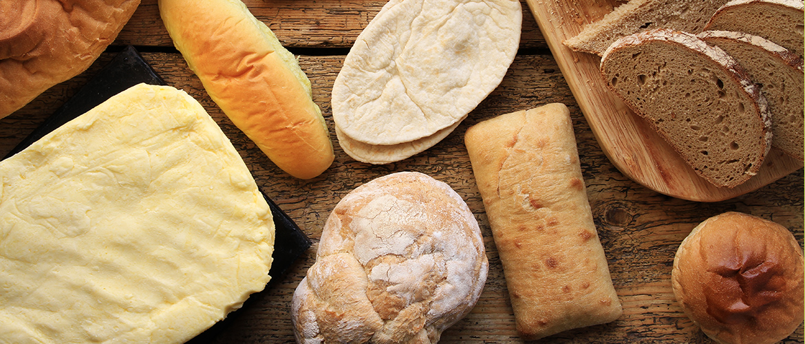

新宿御苑そばの、町のパン屋です。
焼き立てパンを新宿御苑の緑を眺めながら楽しめます。
ひまわりのパンはすべて天然酵母を使用しています。手間暇をかけてゆっくり焼き上げた、おいしくてヘルシーなパンをぜひ味わってください。
〒160-0022 東京都新宿区新宿1-99-300 TEL:03-9900-6802
東京メトロ丸の内線「東京御苑前」駅より徒歩2分
営業時間：月曜日から金曜日 8:30〜18:30
お知らせ
- 8/12（金）はお休みをいただきます。
- 8月のパンは「にんじんパン」です！とってもきれいな自然な色のかわいいパンです☆ぜひ食べてみてください。
- 「●●●●」で取材をうけました！8月25日の10時から放送予定です。よろしければ御覧ください。
最新情報
Facebookページで発信中！